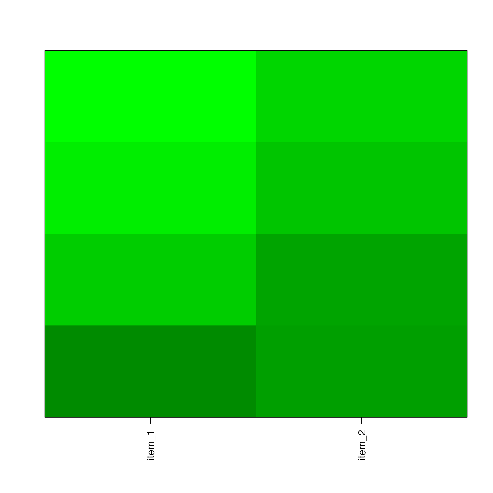
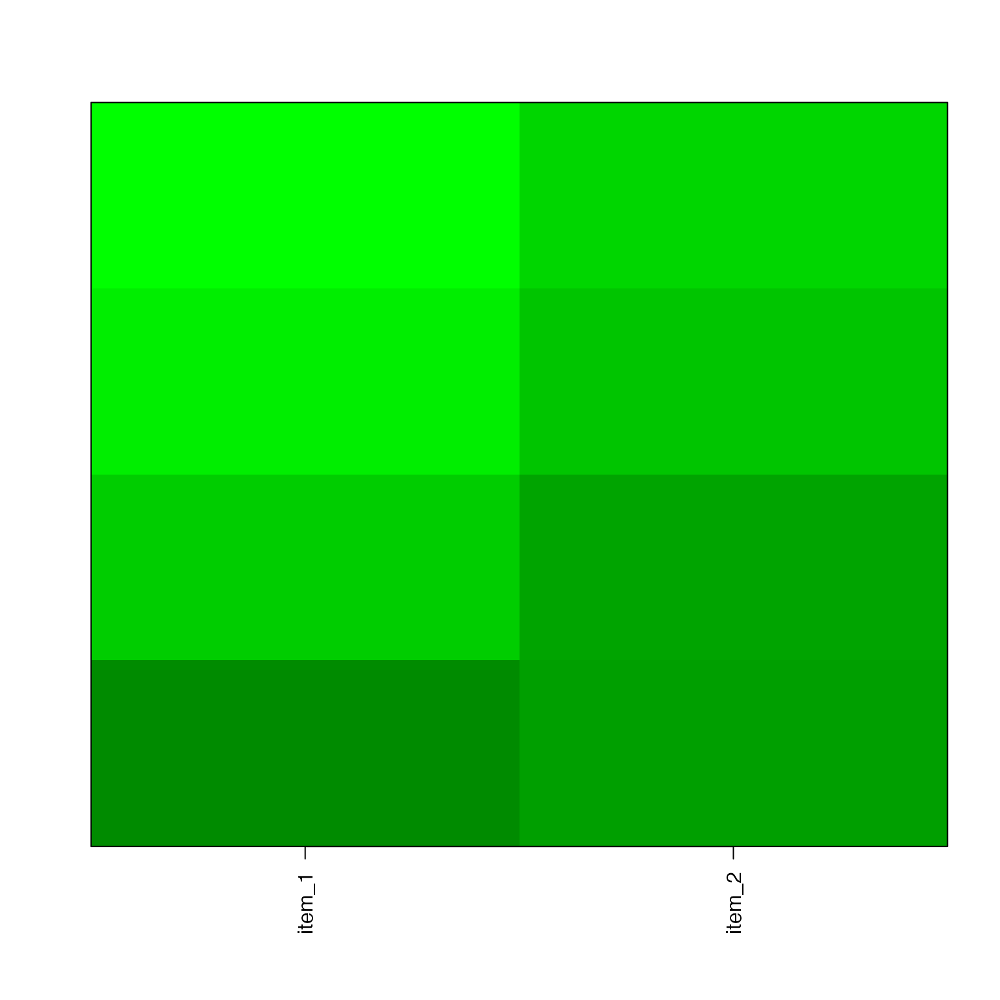

Make dithered color pattern light-dark
Usage
color_dither(
x,
L_diff = 4,
L_max = 90,
L_min = 30,
min_contrast = 1.25,
direction = 1,
returnType = c("vector", "list", "matrix"),
debug = FALSE,
...
)Arguments
- x
charactervector of R colors- L_diff
numericvalue added or subtracted from the L in HSL color space for each color, until contrast is at leastmin_contrast.- L_max, L_min
numericvalues that define the permitted range of L values in HSL color space, which ranges from 0 to 100.- min_contrast
numericminimum contrast as defined bycolorspace::contrast_ratio()for the input and potential output color.- direction
numericthat defines the initial direction, where values >= 0 start by making colors lighter, and values < 0 make colors darker.- returnType
characterstring that defines the output of this function:vector: two colors for every input color inxmatrix: two rows, input colors on first row, output colors on second rowlist: alistwith two colors in each element, with input and output colors together in each vector.
- debug
logicalindicating whether to plot the color iterations usingshowColors().- ...
additional arguments are ignored.
Value
format defined by argument returnType:
vector: two colors for every input color inxmatrix: two rows, input colors on first row, output colors on second rowlist: alistwith two colors in each element, with input and output colors together in each vector.
Details
This function serves a very simple purpose, mainly for
printDebug() to use subtle alternating light/dark colors
for vector output. It takes a color and returns two colors
which are slightly lighter and darker than each other,
to a minimum contrast defined by colorspace::contrast_ratio().
See also
Other jam practical functions:
breakDensity(),
call_fn_ellipsis(),
checkLightMode(),
check_pkg_installed(),
colNum2excelName(),
exp2signed(),
getAxisLabel(),
isFALSEV(),
isTRUEV(),
jargs(),
kable_coloring(),
lldf(),
log2signed(),
middle(),
minorLogTicks(),
newestFile(),
printDebug(),
reload_rmarkdown_cache(),
renameColumn(),
rmInfinite(),
rmNA(),
rmNAs(),
rmNULL(),
setPrompt()
Examples
x <- "firebrick1";
showColors(color_dither(x))
 showColors(color_dither(x, direction=-1))
showColors(color_dither(x, direction=-1))
 x <- vigrep("^green[0-9]", grDevices::colors())
showColors(color_dither(x))
showColors(color_dither(x, direction=-1, returnType="list"))

x <- c("green1", "cyan", "blue", "red", "gold", "yellow", "pink")
showColors(color_dither(x))
x <- vigrep("^green[0-9]", grDevices::colors())
showColors(color_dither(x))
showColors(color_dither(x, direction=-1, returnType="list"))

x <- c("green1", "cyan", "blue", "red", "gold", "yellow", "pink")
showColors(color_dither(x))
 color_dither(x, debug=TRUE)
color_dither(x, debug=TRUE)
 #> [1] "green1" "#00D600" "cyan" "#00D6D6" "blue" "#3D3DFF" "red"
#> [8] "#FF5252" "gold" "#FFF4B8" "yellow" "#D6D600" "pink" "#FF97A9"
#> [1] "green1" "#00D600" "cyan" "#00D6D6" "blue" "#3D3DFF" "red"
#> [8] "#FF5252" "gold" "#FFF4B8" "yellow" "#D6D600" "pink" "#FF97A9"